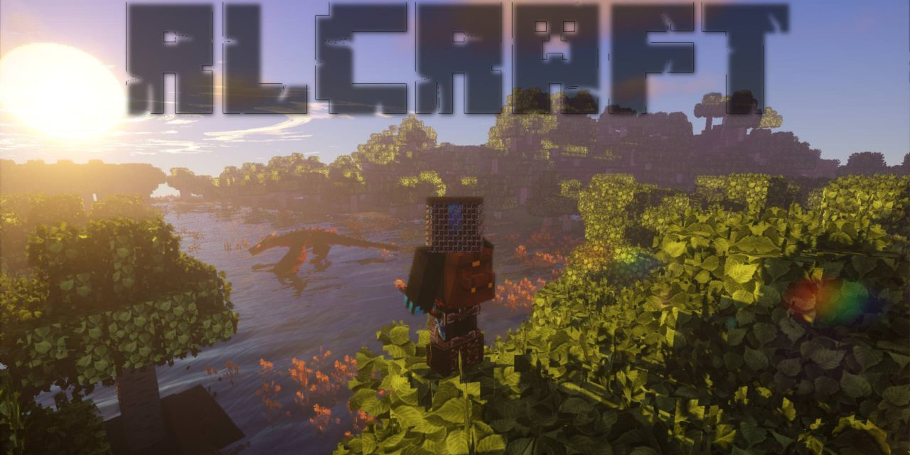
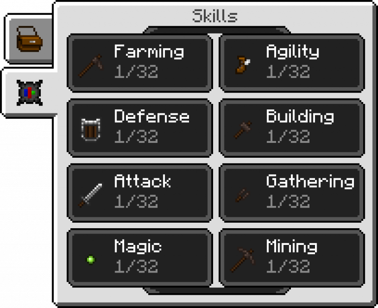

[Modpack] RLCraft – 1.12.2
Le Modpack RLCraft a été créé par le Youtuber Shivaxi, celui-ci explique avoir voulu réaliser un
modpack permettant de tirer de Minecraft une réelle expérience immersive de survie, d’aventure,
le tout enrobé d’un côté RPG.
Pour cela il a sélectionné de nombreux mods (plus de 60) qu’il a modifié individuellement afin
d’obtenir le gameplay qu’il recherchait et qu’ils fonctionnent tous parfaitement ensemble. Il y
a même rajouté quelques scripts de sa composition personnelle pour ajuster des comportements du
mode Vanilla de Minecraft.
Retrouvez ci-dessous en détail les mods qui apportent le plus de changements ainsi que leurs
caractéristiques :
Détails des nouvelles caractéristiques de RLCraft
- Tough As Nails (soif et chaleur) : Le mod ayant le plus d’influence dans ce pack. Vous avez maintenant un bar de soif avec la faim, de plus, vous devez vous soucier de la température, des saisons et de la chaleur spécifique au biome, ce n’est certainement pas une meilleure idée de courir dans un désert au milieu de l’été ou de monter très haut dans les collines ou montagnes quand l’hiver arrive. Il existe de nombreuses façons de lutter contre la chaleur et d’étancher votre soif.
- Rough Tweaks (santé qui ne se régénére pas) : Un changement simple mais puissant aux mécanismes de guérison. Lla nourriture ne va plus restaurer votre santé. Il arrive que des mosntres lâchent des pommades, du plâtre et des bandages qui peuvent tous être utilisés pour soigner vos blessures. Ceux-ci peuvent tous être fabriqués ou trouvés sous forme de butin, avec la possibilité de créer des médicaments plus puissants qui peuvent même devenir enchantés plus tard. N’oubliez pas que les objets de guérison plus avancés, tels que les kits médicaux, prendront une seconde ou deux à guérir, assurez-vous de maintenir le clic droit enfoncé jusqu’à ce que vous guérissiez ou le guérison sera annulée.
- Skillable (système de niveau) – Vous n’êtes plus en mesure d’utiliser immédiatement des outils en diamant, ni d’utiliser une table d’enchantement ou une enclume, ni même de cultiver certaines cultures. Skillable ajoute plusieurs catégories de compétences que vous améliorez avec votre XP. Par exemple, vous devez atteindre le niveau 16 de la compétence d’attaque pour utiliser des armes de diamant, tandis que vous devez atteindre le niveau 8 de la compétence de construction pour pouvoir utiliser des enclumes. Ces compétences et exigences ont été spécialement adaptées à ce pack de modifications, s’étendant beaucoup plus tôt et même au milieu du jeu.
- Level Up! : (arbre de compétences avec avantages et capacités) : En plus de Skillable, Level Up! ajoute un arbre de compétences séparé qui vous permet de vous spécialiser dans le combat, l’artisanat ou l’exploitation minière, afin de gagner de l’XP supplémentaire de ces différents mécanismes. En outre, il ajoute un nouvel arbre de compétences permettant de débloquer des compétences puissantes telles que le sprint, les dégâts de mêlée, les chutes, les risques de fusion de deux minerais et la fusion plus rapide, le temps de tir à l’arc plus rapide, les capacités furtives afin que les mobs ne puissent pas vous détecter en se faufilant , et beaucoup plus. Appuyez sur L pour en savoir plus.
- Lycanite’s Mobs : BEAUCOUP de nouveaux mobs spécifiques à un biome, ainsi que de nouveaux objets et armes pouvant éventuellement être obtenus de ces créatures, et même la possibilité d’en avoir certains comme animaux de compagnie et / ou montures! Les événements de mobs aléatoires sont également activés dans ce modpack. Consultez le wiki ici pour plus d’informations : https://lycanitesmobs.com/
- Infernal Mobs : Divers mobs auront désormais rarement une chance de se reproduire avec des propriétés magiques, allant d’un zombie pouvant invoquer des boules de feu ou d’un squelette pouvant vous piéger dans des toiles. Attention à ces gars ! Ils déposent quand même un bon butin.
- Realistic Torches : Les torches ne sont plus allumées au moment de leur fabrication et doivent être allumées manuellement avec une boîte d’allumettes ou avec du silex et de l’acier. Elles ne durent pas éternellement et s’épuisent en quelques jours. Elles peuvent également être éteintes par la pluie. Plus d’infos ici : https://minecraft.curseforge.com/projects/realistic-torches
- Varied Commodities (decorations) : Ce mod est principalement destiné à la décoration, ajoutant une nouvelle table d’artisanat pour créer des objets tels que des tables et des chaises, des étagères et quelques autres objets de décoration. La plupart des articles et des recettes sont désactivés car ils ne sont pas compatibles avec le modpack et vous ne pourrez pas les obtenir. Cependant, Varied Commodities ajoute également des sources de lumière alternatives, telles que des lanternes et des bougies, qui pourraient s’avérer utiles.
- Better Survival (nouvelles armes dotées de capacités) : Fabriquez le bon outil dont vous aurez besoin. Vous avez des marteaux de guerre qui peuvent repousser les ennemis, une hache de bataille pour désarmer les monstres, des lances qui peuvent être lancées et rallongent votre portée, des dagues rapides avec des dégâts d’attaque furtifs élevés, et des nunchakus. Plus d’informations ici : https://legacy.curseforge.com/minecraft/mc-mods/better-survival-mod
- Quality Tools : Les outils fabriqués présentent désormais diverses qualités pouvant améliorer ou dégrader vos objets. Ceux-ci peuvent également être reforgés en utilisant une station de reforge pour essayer d’améliorer les qualités. S’applique à tous les outils et armures, même aux objets de baubles comme les bagues, les ceintures d’outils et les amulettes.
- Dynamic Surroundings (améliorations de la boussole et de l’horloge) : Parallèlement au réalisme de la refonte sonore apportée par ce mod, il améliore la boussole pour afficher les coordonnées et les directions cardinales appropriées, ce dont vous aurez besoin puisque F3 Debug a été désactivé. Les sons et les effets ambiants ajoutés apportent une expérience immersive extraordinaire en termes de survie et d’aventure.
- Antique Atlas : Une carte beaucoup plus avancée à laquelle il a été donné une recette personnalisée peut être utilisée afin demarquer des emplacements et même pour indiquer où vous êtes décédé. Peut également être dupliqué comme une carte normale et donné à un ami pour la partager.
- Bloodmoon : Une lune de sang a 1 % de chance d’apparaître chaques soirs. Lorsque cela se produit, vous ne pouvez pas dormir, les spawns de mobs sont quadruplés et le rayon d’apparition des joueurs est supprimé, ce qui signifie que les mobs peuvent apparaître juste à côté de vous. Soyez extrêmement prudent lorsque cet événement se produit.
- Crystal Caves – Un mod petit mais utile qui ajoute la génération Crystal aux systèmes de grottes principalement. Lorsqu’ils sont brisés, les fragments de cristal peuvent être utilisés pour créer les armes et les outils standard, avec les mêmes statistiques que le fer, à l’exception d’une durabilité moindre. Cela ajoute un bon support entre la pierre et le fer.
- Ruins et donjons maudits : Le mod Ruins est installé avec une configuration de bibliothèque personnalisée pour générer toutes sortes de structures spécifiques à des biomes, donnant ainsi plus de vie au monde. Recurrent Complex ajoute encore plus de structures aléatoires et étonnantes à trouver, découvrir et explorer dans votre aventure. En plus de cela, vous trouverez beaucoup plus de donjons (très difficiles) à travers le monde, grâce à Doomlike Dungeons et Rogue Dungeons.
- Battletowers – Des battletowers apparaîtront maintenant dans le monde avec des tables de butin personnalisées. Le butin s’améliorera d’autant plus que vous montez. Méfiez-vous du gardien de la tour au sommet, gardant le meilleur butin.
- Baubles (nouveaux anneaux, porte-outils, amulettes) : Ajoute un nouvel inventaire pour l’ajout d’anneaux et d’amulettes à votre personnage, ainsi qu’une nouvelle ceinture à outils pouvant être conçue et utilisée pour gagner de la place dans l’inventaire et pour permuter rapidement les objets à l’aide de la molette. Plus d’informations sur tool belt ici:https://legacy.curseforge.com/minecraft/mc-mods/tool-belt
- Waystones – Les Waystones agissent comme les points de déplacements de Diablo et se génèrent de manière aléatoire et très rarement dans le monde. Une fois trouvées, elles peuvent être activées et sont parfaites pour voyager rapidement dans votre monde, au prix de quelques XP. Vous pouvez même créer des parchemins spéciaux pour pouvoir vous téléporter vers des pierres actives. Ces pierres ne peuvent être détruites. L’élément Pierre de chaîne a été désactivé.https://minecraft.curseforge.com/projects/waystones
- Tree Chopper : Abattez un arbre entiers en vous accroupissant et en utilisant une hache sur un arbre.
- Global Gamerules (génération aléatoire, pas de débogage F3) : Global Gamerules définit de force la difficulté sur Difficile, ainsi que la randomisation du point de spawn des joueurs actuellement compris entre 10000 et 10000 (dans les deux sens). En plus de cela, le débogage F3 a été limité pour ne plus afficher les coordonnées ou les indications de la boussole, et vous devez vous fier aux éléments en jeu.
- Food Expansion : Pas grand chose à dire ici, PLUS DE NOURRITURES !!https://legacy.curseforge.com/minecraft/mc-mods/food-expansion
- XP Book : Vous devrez essayer d’en obtenir un dès que possible. Vous permet de stocker votre XP en toute sécurité dans un livre que vous pourrez récupérer plus tard, ce qui vous empêchera de perdre tout XP gagné si vous mourrez.
- Iberia : Seule la mécanique du sommeil d’Iberia est utilisée, consultez le mod ici :http://rockhymas.github.io/iberia/#iberia-minecraft-made-harder-iberia-2-iberian-sleep
- Wearable Backpacks : Les sacs à dos que vous pouvez créer et porter, occupent l’emplacement du coffre de votre inventaire, maintenez le clic gauche pour équiper, et utilisez le clic droit pour poser (rien dans la main). Ils peuvent également être enchantés, colorés et ont une durabilité. Notez que dans RLCraft, vous ne pouvez pas accéder à votre sac à dos lorsqu’il est équipé, mais vos amis peuvent y accéder pour vous lorsqu’il est sur le dos.
- Grapple Hooks / Hook Shots : Ajout des grappins en bois et en pierre avec des recettes personnalisées à partir de Grapple Hooks (uniquement en bois et en pierre, toutes les autres étant désactivées) et crochets à partir de Hook Shots
- Item Physics & Multi Mine (ramassage des objets par clic droit ou accroupi) : Deux mods qui ajoutent un peu plus de réalisme, Item Physics permet de lancer des objets sur de grandes distances (maintenez la touche Q enfoncée) avec une physique appropriée. Certains objets peuvent flotter dans l’eau et d’autres ne brûleront plus dans la lave. Multi Mine permet aux blocs de conserver leurs dégâts plutôt que de les réinitialiser lorsque vous arrêtez d’exploiter ce bloc
- Custom Recipes (armure et outils d’éperlan, cotte de mailles et armure pour chevaux) : Vous pouvez faire fondre vos outils ou vos armures afin d’en obtenir leur matière. Par exemple, une plaque de poitrine en diamant retournera maintenant 4 diamants une fois fondue. Des cottes de mailles, des armures de cheval et des selles peuvent être fabriquées, ainsi que des armures de loups.
Les choses à ne pas oublier
Avant de commencer le guide et votre aventure, vous devrez toujours garder les points
suivants en tête :
Choisissez bien votre biome
la nouvelle mécanique de température et de chaleur ainsi que des monstres spécifiques aux
biomes, il n’est pas conseillé de commencer à vous balader dans un désert en été ou en
montagne pendant l’hiver. Vous ne pourrez tout simplement pas explorer certains biomes tant
que vous ne disposerez pas de l’équipement nécessaire, surtout que certains biomes seront
beaucoup plus dangereux que d’autres avec Lycanite’s Mobs .
Explorer peut vous sauver la vie
Une grande partie de ce mod est construit autour de l’exploration. Il est très probable que
vous rencontriez divers abris abandonnés, certains avec des lits, ou d’autres qui pourraient
avoir un butin et des équipements utiles.
Montez rapidement de niveaux
Vous avez probablement remarqué que même pour utiliser des cisailles, vos compétences en matière de cueillette et d’agriculture doivent être à 4 chacune. Commencez à utiliser ces niveaux tout de suite, car vous ne serez probablement pas en mesure de dormir la première nuit ou même la seconde. Skillable est accessible depuis votre inventaire, alors que Level Up! est accessible en appuyant sur L.
Les skills de Skillable
Ne dormez pas n’importe où
En raison de la nouvelle mécanique du sommeil, vous ne dormirez pas correctement si votre lit est à l’air libre et vous risquez d’être attaqué pendant votre sommeil. Assurez-vous qu’il est abrité et que votre environnement est bien éclairé.
Objets prioritaires
Il y a des objets que vous devrez essayer d’obtenir immédiatement. Vous aurez besoin soit d’un bidon (canteen) ou d’une bouteille d’eau pour boire, alors tuez des vaches ou trouvez du sable à brûler. Pour allumer des torches, vous aurez besoin d’un silex et d’acier ou d’une boîte d’allumettes. Les boîtes d’allumettes sont plus faciles à obtenir que le fer, alors essayez de trouver de la canne à sucre pour fabriquer le papier dont vous aurez besoin pour en fabriquer un.
Téléchargement & Installation de RLcraft
RLCraft – Curseforge